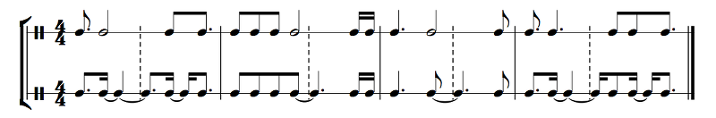
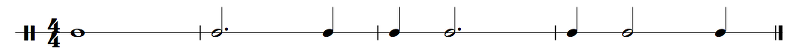
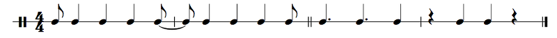
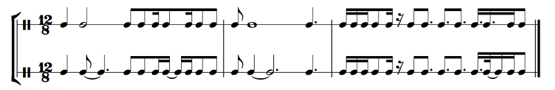

It's a bit more troublesome than that. Here's an example:
Example 2.20
Count the rhythms in the top line, then count the ones in the bottom line.
I added what's sometimes called the invisible bar line that splits a 4/4 bar into two 2/4 bars. A simple thing to remember is to not violate the invisible bar line except in simple cases. You can see in this example how the two lines have the same rhythm, but they're written differently. In the top line, note values are pretty simple, but it's really difficult to actually count. In the bottom line, on the other hand, I made sure to preserve that so-called invisible bar line.
The goal of music notation is to communicate. A computer could easily play that top line; a human would have some trouble! So, as a rule, we keep the metric divisions of the music as clear as possible. By looking at measure 1 in the top line, for example, I have no idea what is on what beat. In the bottom line things are a bit more cluttered, with ties and such, but I can see each of the four beats very clearly and individually.
We talk about the invisible bar line separating the two halves of the measure, but really this applies to all of the divisions hierarchically. A 4/4 bar is generally divided into two half notes, each of which is divided into two quarter notes, each of which is divided into two eighth notes, each of which is divided into two 16th notes, and so on. The basic rule is that you can only cross these divisions in simple cases. The simple cases (for divisions in 2's) are: a single note covers both parts of the division, a dotted note covers the entire first division and first half of the second division, a dotted note covers the second half of the first division and the entire second division, or a note with half the value is exactly in the middle:
Example 2.21
Anything more complicated and you'll want to use ties like in Example 2.20... mostly. Sometimes the rhythm is not only simple but so ubiquitous that it's still easy to read. This is an informed judgment call you'll have to make. Here are some examples of that:
Example 2.22
The first rhythm, syncopated quarter notes, is often used as a repeated piano line in Latin jazz, and it's called a montuno. The second rhythm is often used in the high percussion in Latin jazz, and it's called a clave — specifically, it's a 3 + 2 clave; a 2 + 3 clave has the two measures reversed. Both of these rhythms, when they happen, happen so often that it's not tricky to read them like the top line of Example 2.20.
The beaming should generally follow the divisions. You can see each of the four simple cases reflected in the beaming too. The idea is that four eighth notes are simple enough to beam together, but anything more complicated should have the beats beamed individually. If there are any 16th notes, that makes it more complicated. I think you should generally not have three eighth notes beamed (in 4/4); if there's a rest, you should beam in pairs.
Similar principles apply. You should always respect the divisions of your meter. So, for example, if you're in 5/4 and it's broken down 3 + 2, then the invisible bar line is between beats 3 and 4, and you should probably never violate it at all unless your rhythm is particularly easy to read. Sometimes, though, you may want to communicate to the player a different meter than the time signature. For example, what if, in Example 2.20 measure 1, you actually wanted to have a measure of 16/16, where the first beat is 3 16th notes, the second and third beats are both 4 16th notes, and the fourth beat is 5 16th notes? In that case, the top line would actually be appropriate! Sometimes you want the player to play in a meter that doesn't line up with the bar lines, so you may have eighth notes beamed over the bar line. Just remember that this is all about communication. It's worth looking at compound meters in a bit more depth, though:
Example 2.23
...Yeah. This is 12/8, so while I didn't mark it, the invisible bar line splits each bar into two halves of 6/8, each of which is split into two halves of 3/8, each of which is split into three thirds of one eighth note, etc. That split into three is the weird thing here. One thing is that you just don't see half notes. Half notes break the 6/8 to 3/8 division. Whole notes break those too. If you were to see the top line in measure 1, you'd think that the meter changes to 3/4 for the first half of the bar (the second half is a horrible jumble anyway). In measure 2, you can see the simple syncopation case with that dotted half note in the middle of the bar. In measure 3, things get trickier. First, the first three beats are kind of tricky to read, but they're actually correct. They're just tricky. The syncopation of the eighth note in beat 2 is a bit confusing, but turning it into 16ths would be more confusing, so this is the best we can do. Beat 4 is the only one that needs changing, and even then, it's not exactly easy to read the new rhythm. Compound meter is just hard to read sometimes. That's life.
Very, very good question. I guess we need a new section for that: